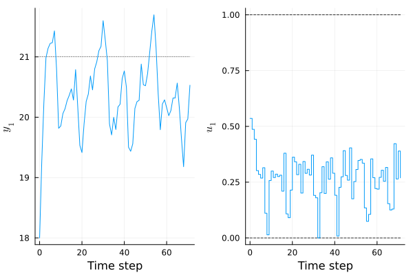
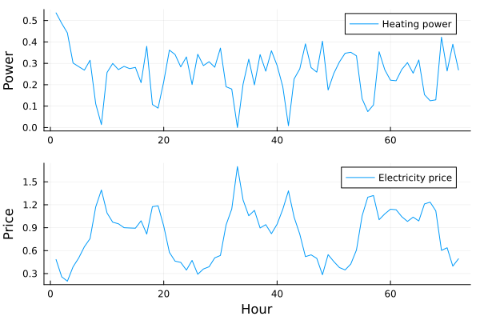
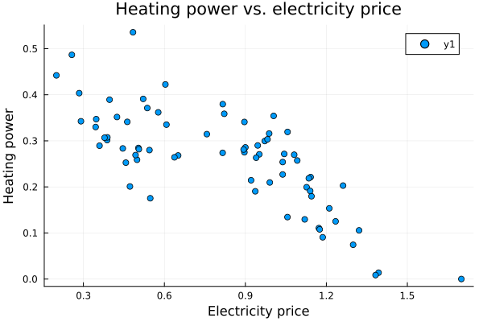

Generalized Parameters
LinearMPC supports a generalized parameter vector p that can enter both the objective and the constraints. By default it is kept constant over the horizon, and setting parameter_preview = true upgrades it to a stagewise trajectory $p_k$. In the objective, the term
\[(Ex p_k + ex)^T x_k + (Eu p_k + eu)^T u_k\]
lets you model economic MPC effects such as time-varying electricity prices without a separate linear-cost feature.
Example: Heat Pump with Time-Varying Electricity Prices
This example uses generalized parameters to make heating more expensive during peak-price hours.
Price Generation
function generate_test_prices(n_days=7)
n_per_day = 24
n = n_days * n_per_day
prices = zeros(n)
for day in 1:n_days
t = range(0, 24, length=n_per_day)
daily_factor = 0.8 + 0.4 * rand()
base = 0.5 .+ 0.2 * sin.(2π * (t .- 6) / 24)
morning_shift = 8 + randn() * 0.5
evening_shift = 18 + randn() * 0.5
morning_peak = (0.4 + 0.2 * rand()) * exp.(-((t .- morning_shift) .^ 2) / 2)
evening_peak = (0.3 + 0.2 * rand()) * exp.(-((t .- evening_shift) .^ 2) / 3)
night_dip = -0.1 * exp.(-((t .- 3) .^ 2) / 4)
day_prices = daily_factor * (base + morning_peak + evening_peak + night_dip)
day_prices = day_prices .+ 0.05 * randn(n_per_day)
idx_start = (day - 1) * n_per_day + 1
idx_end = day * n_per_day
prices[idx_start:idx_end] = day_prices
end
prices = max.(prices, 0.1)
prices = 0.2 .+ 1.5 * (prices .- minimum(prices)) / (maximum(prices) - minimum(prices))
return prices
endimport numpy as np
def generate_test_prices(n_days=7):
n_per_day = 24
n = n_days * n_per_day
prices = np.zeros(n)
for day in range(n_days):
t = np.linspace(0, 24, n_per_day)
daily_factor = 0.8 + 0.4 * np.random.rand()
base = 0.5 + 0.2 * np.sin(2 * np.pi * (t - 6) / 24)
morning_shift = 8 + np.random.randn() * 0.5
evening_shift = 18 + np.random.randn() * 0.5
morning_peak = (0.4 + 0.2 * np.random.rand()) * np.exp(-((t - morning_shift) ** 2) / 2)
evening_peak = (0.3 + 0.2 * np.random.rand()) * np.exp(-((t - evening_shift) ** 2) / 3)
night_dip = -0.1 * np.exp(-((t - 3) ** 2) / 4)
day_prices = daily_factor * (base + morning_peak + evening_peak + night_dip)
day_prices = day_prices + 0.05 * np.random.randn(n_per_day)
idx_start = day * n_per_day
prices[idx_start:idx_start + n_per_day] = day_prices
prices = np.maximum(prices, 0.1)
prices = 0.2 + 1.5 * (prices - prices.min()) / (prices.max() - prices.min())
return pricesRoom Temperature Model
We model a simple room heated by a heat pump with first-order dynamics:
\[T_{k+1} = a \cdot T_k + b \cdot u_k\]
using LinearMPC
using Random
Random.seed!(0)
a = 0.95
b = 4.0
A = [a;;]
B = [b;;]
C = [1.0;;]
Np = 24
mpc = LinearMPC.MPC(A, B; C, Np=Np, Nc=Np)
set_bounds!(mpc; umin=[0.0], umax=[1.0])
set_objective!(mpc; Q=[0.05], Eu=[1.0;;], Ex=[0.02;;])
setup!(mpc)from lmpc import MPC
import numpy as np
np.random.seed(0)
a = 0.95
b = 4.0
A = np.array([[a]])
B = np.array([[b]])
C = np.array([[1.0]])
Np = 24
mpc = MPC(A, B, C=C, Np=Np, Nc=Np)
mpc.set_bounds(umin=[0.0], umax=[1.0])
mpc.set_objective(Q=[0.05], Eu=[[1.0]], Ex=[[0.02]])
mpc.setup()Simulation
The electricity price becomes the generalized parameter preview p:
N_sim = 72
prices = generate_test_prices(3)
r = fill(21.0, 1, N_sim)
mpc.settings.parameter_preview = true
setup!(mpc)
p = prices'
sim = Simulation(mpc; x0=[18.0], N=N_sim, r, p)from lmpc import Simulation
N_sim = 72
prices = generate_test_prices(3)
r = np.full((1, N_sim), 21.0)
mpc.settings({"parameter_preview": True})
mpc.setup()
p = prices.reshape(1, -1)
sim = Simulation(mpc, x0=[18.0], N=N_sim, r=r, p=p)Results
using Plots
plot(sim)import matplotlib.pyplot as plt
plt.plot(sim.ts, sim.ys.T, label="Temperature")
plt.xlabel("Hour"); plt.ylabel("Temperature (°C)")
plt.show()
We can also visualize the price signal alongside the heating profile:
p1 = plot(sim.us', label="Heating power", ylabel="Power")
p2 = plot(p', label="Electricity price", ylabel="Price", xlabel="Hour")
plot(p1, p2, layout=(2,1))fig, (ax1, ax2) = plt.subplots(2, 1, figsize=(8, 6))
ax1.plot(sim.ts, sim.us.T, label="Heating power")
ax1.set_ylabel("Power"); ax1.legend()
ax2.plot(sim.ts, p.T, label="Electricity price")
ax2.set_ylabel("Price"); ax2.set_xlabel("Hour"); ax2.legend()
plt.tight_layout(); plt.show()
scatter(p', sim.us'; xlabel="Electricity price", ylabel="Heating power", title="Heating power vs. electricity price")plt.scatter(p.T, sim.us.T)
plt.xlabel("Electricity price"); plt.ylabel("Heating power")
plt.title("Heating power vs. electricity price")
plt.show()
Using generalized parameters keeps the economic term in the same modeling framework as parameterized constraints, so one preview signal p can drive both state- and control-dependent economic terms as well as parameterized constraints.